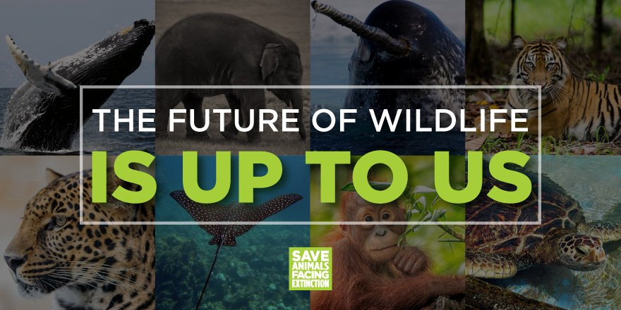
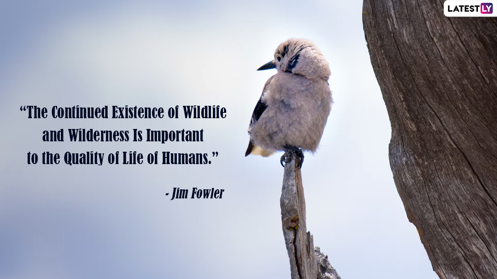

10 Easy Things You Can Do to Save Endangered Species
By protecting habitat, entire communities of animals and plants can be protected together. Parks, wildlife refuges, and other open space should be protected near your community. Open space also provides us with great places to visit and enjoy. Support wildlife habitat and open space protection in your community. When you are buying a house, consider your impact on wildlife habitat.
1. Learn about endangered species in your area.
Teach your friends and family about the wonderful wildlife, birds, fish and plants that live near you.
The first step to protecting endangered species is learning about how interesting and important they are.
Our natural world provides us with many indispensable services including clean air and water, food and medicinal sources, commercial, aesthetic and recreational benefits.
2. Visit a national wildlife refuge, park or other open space.
These protected lands provide habitat to many native wildlife, birds, fish and plants.
Scientists tell us the best way to protect endangered species is to protect the places where they live.
Get involved by volunteering at your local nature center or wildlife refuge.
Go wildlife or bird watching in nearby parks.
Wildlife related recreation creates millions of jobs and supports local businesses.
3. Make your home wildlife friendly.
Secure garbage in shelters or cans with locking lids, feed pets indoors and lock pet doors at night to avoid attracting wild animals into your home.
Reduce your use of water in your home and garden so that animals that live in or near water can have a better chance of survival.
Disinfect bird baths often to avoid disease transmission.
Place decals on windows to deter bird collisions.
Millions of birds die every year because of collisions with windows.
You can help reduce the number of collisions simply by placing decals on the windows in your home and office.
4. Native plants provide food and shelter for native wildlife.
Attracting native insects like bees and butterflies can help pollinate your plants.
The spread of non-native species has greatly impacted native populations around the world.
Invasive species compete with native species for resources and habitat.
They can even prey on native species directly, forcing native species towards extinction.
5. Herbicides and pesticides may keep yards looking nice but they are in fact hazardous pollutants that affect wildlife at many levels.
Many herbicides and pesticides take a long time to degrade and build up in the soils or throughout the food chain.
Predators such as hawks, owls and coyotes can be harmed if they eat poisoned animals.
Some groups of animals such as amphibians are particularly vulnerable to these chemical pollutants and suffer greatly as a result of the high levels of herbicides and pesticides in their habitat.
6. Slow down when driving.
Many animals live in developed areas and this means they must navigate a landscape full of human hazards.
One of the biggest obstacles to wildlife living in developed areas is roads.
Roads divide habitat and present a constant hazard to any animal attempting to cross from one side to the other.
So when you’re out and about, slow down and keep an eye out for wildlife.
7. Recycle and buy sustainable products.
Buy recycled paper, sustainable products like bamboo and Forest Stewardship Council wood products to protect forest species.
Never buy furniture made from wood from rainforests.
Recycle your cell phones, because a mineral used in cell phones and other electronics is mined in gorilla habitat.
Minimize your use of palm oil because forests where tigers live are being cut down to plant palm plantations.
8. Never purchase products made from threatened or endangered species.
Overseas trips can be exciting and fun, and everyone wants a souvenir.
But sometimes the souvenirs are made from species nearing extinction.
Avoid supporting the market in illegal wildlife including: tortoise-shell, ivory, coral. Also, be careful of products including fur from tigers, polar bears, sea otters and other endangered wildlife, crocodile skin, live monkeys or apes, most live birds including parrots, macaws, cockatoos and finches, some live snakes, turtles and lizards, some orchids, cacti and cycads, medicinal products made from rhinos, tiger or Asiatic black bear.
9. Harassing wildlife is cruel and illegal.
Shooting, trapping, or forcing a threatened or endangered animal into captivity is also illegal and can lead to their extinction.
Don’t participate in this activity, and report it as soon as you see it to your local state or federal wildlife enforcement office.
10. Protect wildlife habitat.
Perhaps the greatest threat that faces many species is the widespread destruction of habitat. Scientists tell us the best way to protect endangered species is to protect the special places where they live.
Wildlife must have places to find food, shelter and raise their young.
Logging, oil and gas drilling, over-grazing and development all result habitat destruction.
Endangered species habitat should be protected and these impacts minimized.

